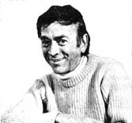

In celebration of little-known MOTHER-type folks from all over.
After giving birth to two healthy children, Alsea, Oregon resident Bonnie Hill miscarried in her third pregnancy. At the time, the doctor could offer no explanation for the spontaneous abortion . . . but in the summer of 1977-when Bonnie read of some studies that showed adverse effects in the reproductive systems of rhesus monkeys exposed to the herbicide 2,4,5-T-she began her own probe.
The Hills live in timber country, where herbicides are applied to kill the broadleaved brush that shades out Douglas fir seedlings . . . and Bonnie soon discovered that eight women in the Alsea area had suffered a total of 11 miscarriages, each within two weeks to a month of a major spraying operation. The women promptly composed a joint letter-which they sent to government agencies, legislators, the industries that had used the spray, and the media-asking for help in determining whether there might be a cause-and-effect relationship between the herbicide use and the miscarriages. As a result, the Environmental Protection Agency initiated an investigation that brought about a temporary emergency ban on 2,4,5-T (and the related chemical silvex) in February 1979.
There was no spraying near Alsea during either of Ms. Hill's last two pregnancies-each of which produced a fine baby girl-but Bonnie sees the issuance of a permanent ban on the herbicides as the public's only lasting means of protec tion.-Peter Jensen.
After a three-year apprenticeship under a Piano Technicians Guild craftsman, Californiaraised Bruce E. Grimes decided to put his new skill to use in a unique manner: The keyboard repair man packed his tools and supplies into a tiny trailer . . . attached the carrier to his ten-speed bike . . . and began pedaling from town to town to offer his services for sale, for barter, and-sometimes-for free!
Grimes trained for the trip-while he was learning his trade-by making house calls on his three-speed bicycle. And from the beginning the itinerant tuner was encouraged by the ways in which folks reacted to his unusual means of livelihood. "I've been invited in off the street-on more than one occasion-and offered a meal and a place to sleep," says Bruce.
Though Grimes has no definite plans as to how long he'll continue his travels, the touring tradesman is content with his lifestyle for now. "In previous jobs;" he says, "my work was not my own: I was involved in tasks someone else wanted me to perform. For the past four years I've been doing what I know is right for me." JV.
When Hermann Gurfinkel made his move to the country over seven years ago, the Hoosier sculptor's artist friends predicted he would soon come running back to the city. However, the craftsman promptly set himself up in an old brick farmhouse studio-surrounded by lakes and ponds with abundant lotus flowers, waterlilies, bullfrogs, and dragonflies-and began to sketch, paint, and sculpt the scenes of his new habitat. Before long, Gurfinkel was offering exhibits of his work in nearby towns . . . and he quickly discovered that local farmers were eager to purchase paintings of their own homesteads and animals.
At present, Hermann is working on a limited edition series of endangered species sculptures, beginning with an elaborately detailed 95-pound bronze buffalo . . . a project which is just one more example of the artist's efforts to capture and preserve what's left of our planet's undefiled countryside. -JV.
Harvey Woodman has devoted the past 17 years to the development of a concept he calls "Perpetual Tide Power" . . . an idea that could revolutionize the energy industry by producing electricity through the ocean's tidal movement.
"An important factor in the alternative energy game," says the 59-year-old innovator, "is finding an answer to the problem of continuous production... and my system can manufacture power 24 hours a day." Harvey's device employs tanks that function on an active and reserve rotation pattern (the vessels store tidal water and release it as needed). Once tide sequences at a particular plant site have been determined, the order of rotation between working and nonworking tanks can be computer-programmed for-the inventor claimsnonstop energy production. Electrical power is generated both by water that flows through a series of hydro turbines and by tank air-which is displaced by the stored tidal water-that passes through an air turbine.
"My concept is a simple solution to a complicated problem," says Woody, "but I'm having a hard time getting the bureaucrats to make that connection." -Tom Kolba.
At age 92, NETTIE PODELL OTTENBERG is practicing and teaching the yoga discipline of Indian-born Savitri Ahuja . . . whose exercises (which are detailed in his book, Savitri's Way to Perfect Fitness Through Hatha Yoga, Simon & Schuster, $12.95) have been particularly effective in alleviating ailments-such as arthritis-that commonly affect the elderly. "The beauty of this program," explains Ms. Ottenberg, "is that is doesn't lead to overexertion . . . just to pleasant relaxation of mind and body."
M.I. RASMUSSEN, a professor at New Mexico State University, teaches the only course in windmill technology offered anywhere in the United States. According to the professor, there are as many as 240,000 old water-pumpers scattered across the country that could be refurbished and put in top running condition.
Air Car I is TERRY MILLER's answer to Detroit's industrial barons. The Crestline, Kansas inventor claims that his three-wheeled vehicle-which is propelled by mediumpressure air from two metal cylinders-can be built for only $850 and costs just 20 a mile to operate.
Atlanta, Georgia's CHRIS and RON NICODEMUS have found a way to fight the rising cost of living: In an effort to save enough money to purchase a new home, the Nicodemus family has traded its surburban condominium for a tandem tent in a nearby campground. With their monthly expenses-for electricity, water, and the camping fee-now totaling a modest $80, the Nicodemuses hope to be able to save enough cash to bid on a piece of property within one year.-JV.
|
|
 |
|